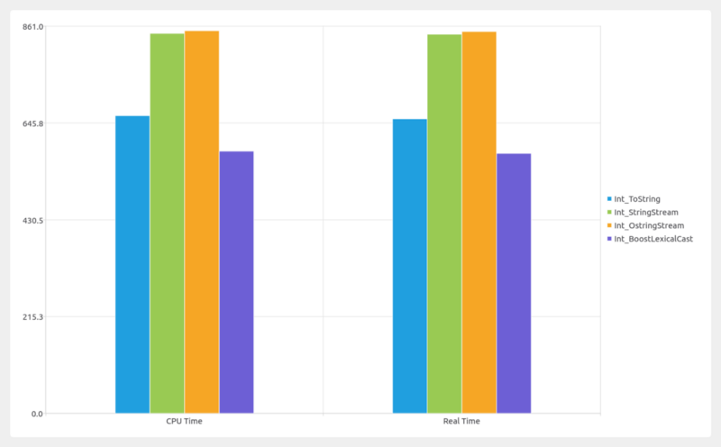
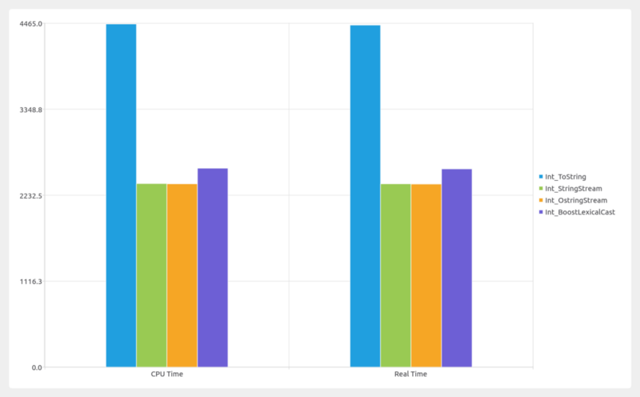
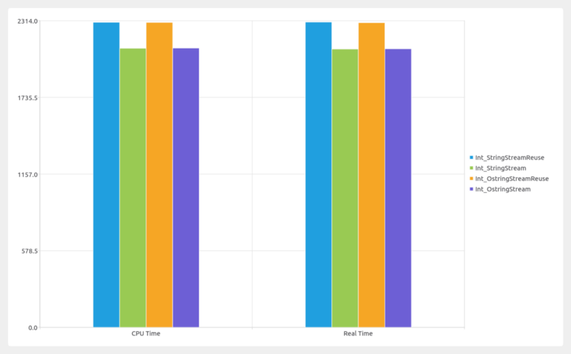
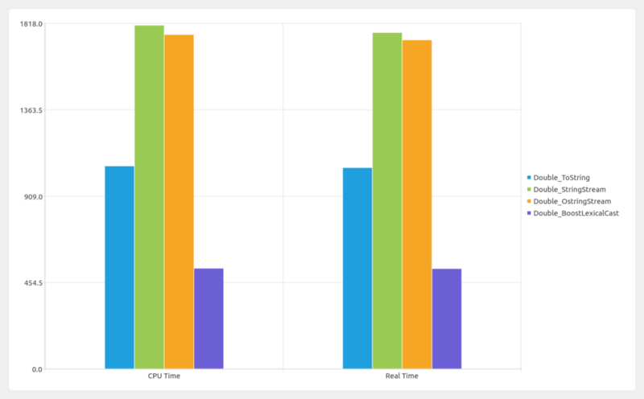

string conversion benchmark in C++
There are three ways to convert any fundamental data to string.
- std::to_string
- std::ostringstream
- boost::lexical_cast
template <typename T>
std::string stringify_ostringstream(T val)
{
std::ostringstream ss;
ss << val;
return ss.str();
}
std::ostringstream g_buffer;
template <typename T>
std::string stringify_ostringstream_reuse(T val)
{
g_buffer.str("");
g_buffer.clear();
g_buffer << val;
return g_buffer.str();
}
template <typename T>
std::string stringify_tostring(T val)
{
return std::to_string(val);
}
In this post, I will analyze which one is the fastest to convert any fundamental(int, double, boolean) data to string. I am using google benchmark to measure the time difference. In all charts, y-axis is time in nano seconds.
type=int input_count = 1

For only, one conversion, both std::stringstream and std::ostringstream take nearly same time. boost::lexical_cast in the fastest. And std::to_string is faster than stringstream and slower than boost::lexical_cast. boost::lexical_cast is not the best way for string conversion, because it throws an exception in case of failure.
type=int input_count > 30

Here both std::stringstream and std::ostringstream outperform std::to_string and boost::lexical_cast. You can get better result by reusing std::stringstream and std::ostringstream buffer.
std::ostringstream oss;
oss.str(“”);
oss.clear();
Creating stream objects are very expensive. So, reuse of buffer gives better result.

type=double input_count=1

Performance is very similar to integer. Boost lexical_cast outperforms std::to_string and stringstream.
type=double input_count=30
 For multiple inputs, boost::lexical_cast outperforms everyone else.
For multiple inputs, boost::lexical_cast outperforms everyone else.
So, my observations are
- Always use std::to_string to convert any single value to std::string.
- In case of double, use std::string. If you need, precision, use std::ostringstream.
- In all other cases, use std::ostringstream.
Image produced: https://github.com/asit-dhal/BenchmarkViewer